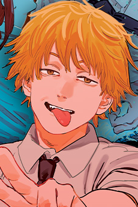
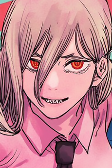
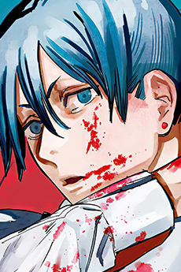

Hybrid / Main character
Denji
Denji wants a normal life. Pochita lives in his heart.
ChainsawPublic Safety team
Meet the people in Chainsaw Man.

Hybrid / Main character
Denji wants a normal life. Pochita lives in his heart.
Chainsaw
Blood devil / Wild card
Power is loud and proud. She often makes missions harder.
Blood
Devil hunter / Strategist
Aki is serious and focused. He tries to keep the team on track.
Sword